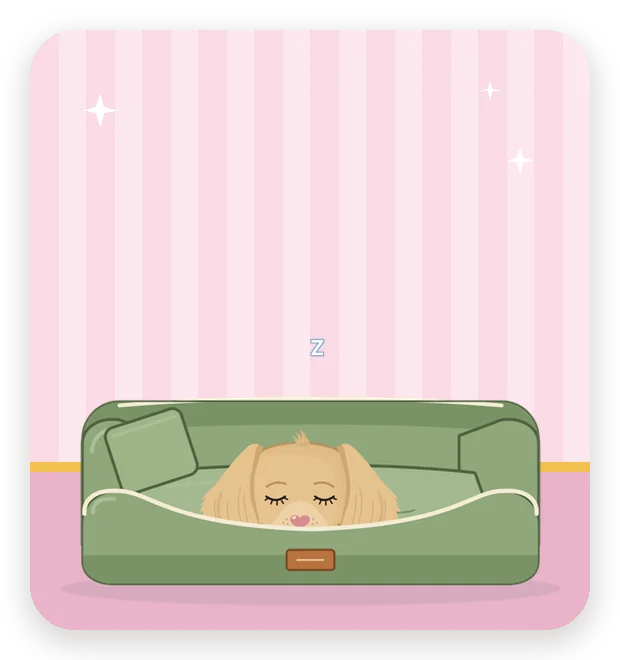

Help and contact
Questions, problems or ideas? Email us at [SUPPORT EMAIL]. Tell us what's happening, which iPhone you have and, if you can, send a screenshot. We read every message.

How does Soodle count my steps?
Soodle reads your step count from Apple Health on your iPhone. It doesn't count steps itself, so the number matches what you see in the Health app.
My steps show as 0 or aren't updating
Soodle needs permission to read your steps. Open the Health app, tap your picture, then Privacy › Apps, tap Soodle and switch on Steps. Then open Soodle again.
How do I earn hearts?
By walking and looking after your pup. Every 1,000 steps earns a heart, paid the next morning, and reaching your goal earns extra. Filling the food and water bowls, a pat, a bath and cleaning up after your pup earn hearts too. Spend them in the shop on clothes and things for your pup's room.
How do streaks work?
A day counts towards your streak when you reach your step goal and open Soodle that day. You can open it in the morning and walk later, and the day still counts. Missed a day? A treat from the shop the next day can save your streak. Your best streak is always kept, and streak days unlock rewards you can't buy.
Can I change my daily goal?
Yes. Tap the round pencil button on the step card on the home screen. Your new goal starts from tomorrow, so today's goal stays as it is.
What reminders will I get?
Never more than one a day, such as a gentle nudge in the evening if you haven't reached your goal yet, or a cheer when you do. You can switch each kind on or off in Soodle's Settings.
Do I need an account?
No. There's nothing to sign up for. Your pup, hearts and streaks are saved on your iPhone. If you delete the app, they're deleted with it.
Privacy
Your steps stay on your iPhone. Read our full privacy policy on the Privacy page.
Still need a paw?
Email us at [SUPPORT EMAIL] and we'll get back to you.